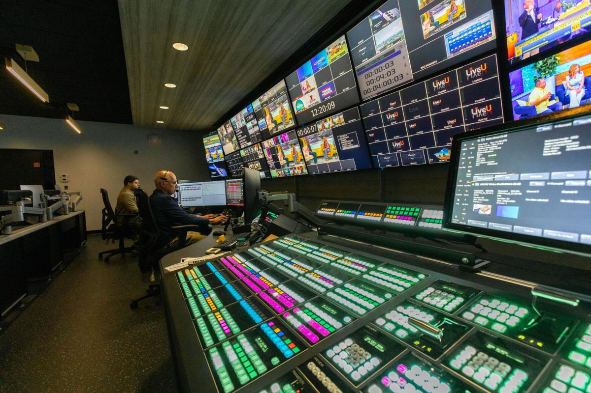

Diseño Web Inclusivo y Accesible
La accesibilidad web garantiza que todas las personas, independientemente de sus capacidades físicas o cognitivas, puedan percibir, entender, navegar e interactuar con la web de manera efectiva.
Tarea 2-1 Gerardo De Jesús

La accesibilidad web garantiza que todas las personas, independientemente de sus capacidades físicas o cognitivas, puedan percibir, entender, navegar e interactuar con la web de manera efectiva.
Utilizando sombras (`box-shadow`), transformaciones (`transform`), transiciones suaves y gradientes dinámicos, logramos una experiencia visual atractiva sin sacrificar rendimiento ni accesibilidad.
| ID | Proyecto | Categoría | Estado | Puntuación Accesibilidad |
|---|---|---|---|---|
| 01 | Rediseño Portal Web | Desarrollo Web | Completado | 100 / 100 |
| 02 | Sistema de Inventario | Aplicación Base de Datos | En Progreso | 98 / 100 |
| 03 | Módulo de Reportes PDF | Optimización IT | Planificado | 95 / 100 |